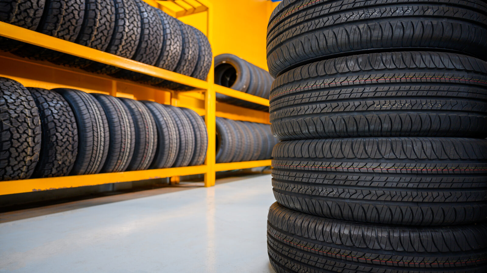

Casing history is only useful if it travels with the casing. What TMC's recommended practices on tire identification, RFID and casing data marking cover, and how a fleet that retreads for itself can build a casing record it owns.
Published October 26, 2026 · Good Hope Retreaders

A casing is the most valuable thing a retread line handles, and it is only worth what you know about it. How old is it? How many retreads has it had? What repairs, and why was it last removed? If that history lives in someone's memory or on a worksheet that never leaves the shop, every casing is a fresh gamble at inspection. If it travels with the casing, the decisions get better.
This guide looks at what the Technology & Maintenance Council (TMC) publishes on tire identification, tracking and casing data marking, and how a fleet that controls its own retread line can use it. We could only read search-result descriptions of these documents, not their full text, so treat this as a map of where to look. Get the current practices from TMC before you write procedures.
TMC's 2019 industry reference guide to its recommended practices (RPs) lists several that bear on casing history:
One caution. The guide we found is from 2019, and these practices are revised over time, so check TMC's current versions of RP 229, RP 247 and RP 248A before relying on the detail above.
Vendor material describes RFID tags that can be embedded in the tire during manufacture or read at each retread station, and it uses the EPC Gen2 / ISO 18000-6C air interface. That interface is a radio standard, not a casing-history standard, and we found no standard that fixes what a casing record must contain. Vendor claims about savings are marketing, and we have not repeated them. The practical point is simpler: whichever method you use, a casing needs a unique identifier and a record keyed to it.
Several things a retread line decides depend on casing history: whether a casing is inside its age policy, how many retreads it can still take (see retread cycles per casing), where it sits against your pull-point policy, and how it feeds your casing salvage rate. That is a structural point, not a published statistic: the party that holds the casing record can make those calls with better information. When your casings are retreaded by an outside operation, the record of what happened to each one sits in their process unless you ask for it. When you retread them yourself, the record is yours from the first inspection onward.
Our reasoning, not a published figure:
Good Hope is a manufacturer-direct supplier of retreading equipment, consumables, components and repair tools, with local service in Ontario. We do not run retread shops for customers. We equip and supply a fleet to run its own retread operation, including the inspection and processing equipment your casing record will track.
We supply retreading equipment, consumables, components and repair tools from our Ontario warehouse, with transparent all-in Canadian pricing. Tell us your volume and tire sizes and we will help you plan the equipment and supplies for your own line.
Get an equipment quote →Send us your requirements and we'll get back to you within 24 hours with pricing and lead times — no obligation.